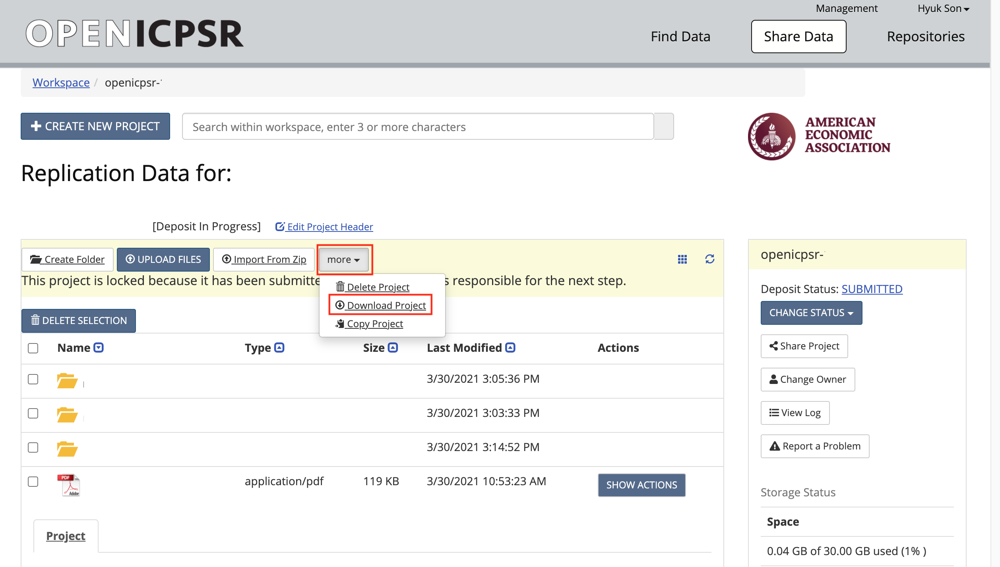

Chapter 11 AEA Jira workflow - A guide
For pre-publication verification, we use a Jira-based workflow similar to the post-publication processes described in the Wiki.
11.1 Scope
Your supervisor will assign you to this workflow. This workflow covers code and data, even when data may not be accessible. Supervisor, see other document for details.
- This workflow DOES NOT cover simple metadata assessment of openICPSR deposits, for instance for AEA Papers and Proceedings deposits. See Instructions PandP Checks.
11.2 Overview

jira image
The following table illustrates the flow and transitions. The transition field identifies the button that will appear in the interface
that needs to be clicked in order to progress an issue from the From state to the To state. The Condition field identifies
which form field needs to be filled out in order to be able to make the transition. Blocked is always an option, and leads to a “waiting state”
until a resolution can be found.
| From | Transition | → To | Condition |
|---|---|---|---|
| Assigned | Start task | → In Progress | |
| In Progress | Download code | → Code | Code provenance have been filled out, Journal has been identified, Empirical Article=Yes, External validation != “yes” |
| Code | Access data | → Data | Git working location, Data provenance have been filled out. |
| Data | Prepare preliminary report | → Write Preliminary Report | |
| Write Preliminary Report | Data is accessible | → Verification | Location of data has been filled out. |
| . | Data not available | → Code review | Reason for non-accessibility of data has been filled out. |
| Verification, Code review | Prepare report | → Report | |
| Report | Submit for review | → Report Under Review | Report URL has been filled out. |
| Multiple | Need information | → Incomplete | when information is missing |
| Incomplete | Restart | → Code review | |
| . | Restart verification | → Verification | |
| . | Restart task | → In Progress |
The following are only relevant for “Approvers” or “Pre-Approvers” (if you have not been told you are a “(Pre-)Approver”, you are not.)
| From | Transition | → To | Condition |
|---|---|---|---|
| Open | Assign | → Assigned | |
| In Progress | Alternate Workflow | → Alternate Workflow | |
| Under Review | Approve | → Approved | Can only be done by approvers. |
| Pre-approved | Approve | → Approved | Can only be done by approvers. |
| Under Review | Pre-Approve | → Pre-Approved | Can only be done by pre-approvers. |
| . | Incomplete | → Incomplete | n.a. |
| Approved | Done | → Done | n.a | n.a. |
| Blocked | Reopen | → Open | n.a. |
The following are only relevant for “Publishers” (if you have not been told you are a “Publisher”, you are not.)
| From | Transition | → To | Condition |
|---|---|---|---|
| Approved | Submit to MC | → Submitted to MC | MCRecommendationV2 is filled out |
| Submitted to MC | Wait for response on ICPSR | → Pending openICPSR changes | MCRecommendationV2 is Accepted with changes and notes to be added on openICPSR |
| Submitted to MC | Prepare for publication | → Pending Publication | openICPSRVersion is filled out, issue is NOT an R&R |
| Pending openICPSR changes | Prepare for publication | –> Pending Publication | openICPSRVersion is filled out, Changes have been satisfied on openICPSR |
| Pending Publication | Publish | → Published | openICPSRDOI is set |
11.2.1 Notes
- In the Issue form, please also fill out other fields, as noted.
- At any point, you can move the issue to
Incomplete: more information/action is required before you can proceed. You should also notify us of the situation ASAP - When committing, always use Smart Commits, e.g. > JRA-34 #comment corrected indent issue
- Use JIRA to communicate with your supervisor as issues arise, including code that takes a long time to run.
11.3 Details
Additional details for each of the key stages are provided here. Below is a screenshot of a Jira ticket. Some things to note:
- The blue
In Progressbox in the upper right - area 3 of the screen - is how you “advance” the Jira ticket. When you are first assigned a replication, this box will sayOpen. - The tall grey bar on the left side - area 1 of the screen - contains several handy links that you will use throughout the process.
- Sometimes this box is not visible. To make it visible, edit the URL for the Jira ticket so that there are no characters after the ticket number (e.g. AEAREP-123). You may have to refresh the page after doing so.
jira screen
11.3.1 In Progress
The first thing you must do is to advance the ticket from Open to In Progress.
- This lets us know that you have started working on replication.
At this stage, you are collecting information.
start by creating a repository (for detailed instructions, see the Wiki page)
- the repository name should be the name of the JIRA issue (e.g.,
aearep-123) - Be sure that
aeaverificationis always the “owner” of the report on Bitbucket.
- the repository name should be the name of the JIRA issue (e.g.,
populate the repository with the latest version of the template (If you used the “Import Repository” technique outlined on the wiki, this is already done!)
Clone the Bitbucket repository onto the computer you are working on (
git clone https://yourname@bitbucket.org/aeaverification/aearep-xxx.git)Delete (
git rm) unused files from the template!- Example:
git rm README.md template-config.Rif the replication archive does not contain any R files (you can do this at any time before writing the Preliminary Report)
- Example:
From the JIRA issue, download and add Manuscript, Data and Code Availability Form (DCAF).
- Download from Jira issue attachments. The manuscript is often called
PDF_Proof.pdf. - Add to the root of the repository, and add them to the Git repo (e.g.,
git add PDF_Proof.pdf DataCodeAvailability.pdf)
- Download from Jira issue attachments. The manuscript is often called
The root of the repository should contain only our files (i.e., REPLICATION.md, etc.) and the manuscript files (main manuscript, any online appendices and README files provided through the JIRA ticket).
Example:
code-check.xlsx config.do PDF_Proof.PDF PII_stata_scan.do DataCodeAvailability.pdf REPLICATION.md
git commit,git push…Then fill out the following fields in the Jira ticket (some may be pre-populated):
-
Code provenanceIn almost all cases, this is the openICPSR repo for which you will have received a notification email.- If code and/or data are provided by email,
Code provenanceshould be filled out with “https://email”, otherwise with a URL.
- If code and/or data are provided by email,
-
Journal -
Manuscript Central identifier -
Bitbucket short name(e.g.,aearep-123)- this should auto-fill the
Git working location.
- this should auto-fill the
-
The following fields, located in the REPL. INFO tab area 2 of the screen, must also be filled out:
-
Empirical Article: “Does the article contain empirical work, simulations, or experimental work?”- typically the answer should be “Yes”. You should answer “No” only if you read the article and find that it is entirely theoretical, no simulations or empirical work at all.
-
RCT: Is the paper about a randomized control trial? This should be immediately obvious from the abstract.RCT NUMBER: If it is an RCT, fill in the associated RCT registration number (typically in the title page footnote)
-
You can now proceed to change the status to Code.
11.3.2 Code
In this stage, download the code or the entire replication package, and populate the Bitbucket repository.
You now need to decide where you are going to do the data analysis - that should be the place you do the next few steps.
This is because the git setup we use does not allow you to include the data files in the Bitbucket repository, so when you download the replication package from openICPSR or elsewhere, they do not get added to the Bitbucket repository.
-
Download the code from openICPSR (typicaly for most cases). See openICPSR repositories for instructions on downloading these materials. Typically called
111234.zip.  -
Populate the Bitbucket repository:
- If not already done, use
git cloneto clone the Bitbucket repository onto CISER (or your laptop, but see below). It should be named something likeaearep-123.- [EXPERT TIP] It may be more convenient to do this FIRST on CISER, so that the data files are there. Data files are NOT committed to the repository. You can then later update the repository on your local computer.
- Copy/paste the downloaded openICPSR folder (ZIP file) into the local copy of the
aearep-123repository. The local repository should now have the relevant LDI replication template materials and the openICPSR folder containing the replication materials provided by the authors. - Unzip the openICPSR folder under a folder named by the openICPSR repostory number. On Windows and OSX, double-click. From bash:
mkdir 111234; cd 111234; unzip ../111234.zip; cd ..- The manuscript’s files should be in a subdirectory (e.g,
111234, the openICPSR repository number).
- The manuscript’s files should be in a subdirectory (e.g,
- Perform a
git add,git commit,git pushsequence to populate the Bitbucket repo with the authors’ replication materials (see above how to handle data).
- If not already done, use
- Also add the manuscript, and any response by the authors (if a revision)
-
Be sure to
git pushit all to Bitbucket, with a meaningful commit message. After pushing to the repository, is should now look like this:
116941/
code-check.xlsx
config.do
PDF_Proof.PDF
PII_stata_scan.do
readme.pdf
REPLICATION.mdNow you will establish a list of Datasets used and fill out the Data Citation and Information report.
- Please check Data and Code Availability Form.
- The form should be attached in the JIRA ticket.
- In area 2 of the screen, choose DCAF.
- Open Data and Code Availability Form, and check if all blanks are filled out.
- Once you checked the form, choose “Yes” from the dropdown menu of
DCAF_README_checkedcell. - If the answer to the following question at the bottom of the form is “Yes”, then, choose “Yes” from the dropdown menu of
DCAF_Access_Restrictions. Otherwise, choose “No”. “Is any of the data used in this manuscript subject to access restrictions?”
- From the README provided by the authors, the data section of the article itself, or an appendix, establish a list of datasets used in the article.
-
Fill out the Data Citation and Information report:
- A link to the report can be found in the tall grey bar - area 1 of the ticket. If this tall grey bar is not visible, then edit the url according to the directions above.
-
Fill out the
DATA CITATION REPORTfield on Jira with the date on which you complete this report.- If there are more than 10 datasets that you can see, get approval from your Team Lead to fill out this spreadsheet instead (see the printed form for allowed categories). You should fill out the FIRST dataset on the Data Citation and Information form. At the end of the form is an upload option, where you should upload the form. The spreadsheet should then also be added to the repo (add, commit, push), and a note added to the JIRA comments.
- Use the list of datasets to guide you when filling this out.
-
AT THE SAME TIME: write the corresponding
Data descriptionsection of REPLICATION.md. This should provide detail about the datasets that are not obvious from the Data Citation and Information .- If data are cited, copy and past the citation to the replication report, clarify which one you are referring to.
- In particular, check each provided URL, and verify if there is a “Data Use Agreement”, “Citation requirement”, “License” on the web page. Check any such data use agreement for conditions. These may require that the authors cite a particular paper, or cite the data in a particular way (check this), or that the authors may not actually redistribute (provide) the data (check this!). If you have doubts, check with your supervisor.
-
Add the list of datasets to the repository by committing the preliminary version of the REPLICATION.md (
git add,git commit,git push) -
Fill out the
DataCitationSummaryfield indicating how many data citations are in order: all, some, or none. -
Fill out the
Data Provenancesection- is the data in the openICPSR repository, or is it someplace else? “Various” is a legitimate answer if it is in various locations.
- Please refer to Chapter 9 A guided walk through the Replication Report for more details about which datasets to be included and how to assess the provided information.
Do a first pass through the code files provided:
Do NOT run any code!
- review the code in detail.
- In the template, you will find code-check.xlsx. Use this to create a list of all Tables and Figures in the paper, and use this to guide you in REPLICATION.md.
-
Fill out the “Code Description” section of the REPLICATION.md
- Provide some information about the program files (are there 3 Stata files? Are there 5 Matlab programs?). You will use this information to fill out the
Software Usedlater as well, but provide details here. - Did you have difficulty aligning the README with the files? Does the sequence suggested by the programs differ from what’s written in the README?
- Are all the REQUIREMENTS listed? How long does the author say the code will run?
- Are there files in the archive not explained in the README?
- [EXPERT TIP] You should not run the code at this time, only read the program code! (You can do this on your laptop)
- Copy-and-paste the code-check.xlsx into the code description part, listing the programs. Omitte “Replicated?” Column in doing so. Use the Excel-to-Markdown plugin for VSCode.
- This table will be pasted in under “Findings” again, with “Replicated?” column.
- Provide some information about the program files (are there 3 Stata files? Are there 5 Matlab programs?). You will use this information to fill out the
Next fill out the following fields in the Jira ticket:
-
BITBUCKET SHORT NAME- if not already done earlier
Commit!
You can now proceed to change the status to Data. As you select that transition, you will be asked various questions:
-
Software UsedStart typing the name of the software program you will use for the replication. Software that have been used in the past will show up as options (e.g. start typing “Stata” and you will see it pop up). -
PROGRAMSEQUENCEDoes the README tell you the correct sequence for running the code? -
PROGRAMSDOCUMENTATIONAre the provided programs well commented? Are they documented in the README? -
PROGRAMSSTRUCTUREMANUALDoes the README note any manual changes that you need to make to the code in order for it to run?
11.3.3 Data
-
Download the data (if not already done in the previous step, and if available).
- Data should be stored locally (currently) / in Git LFS (soon)
-
If there is data: Run the PII-checking code, review the output, and record the result in the REPLICATION.md
- You should check the output - it is not automatic.
- You should use words, and examples, from the output if it looks like there is Personally Identifying Information (PII) like names, addresses, etc. in the output.
- The author will NOT see the output from the program unless you copy relevant parts of it into the report.
-
Describe the data
- do relevant variables have labels?
- Is the data readable?
-
Is the data in archive-ready formats (
csvortxtare the preferred formats by librarians, butdtaorspssare also OK;matfiles are discouraged)
Fill out the following Jira fields:
-
DATA PROVENANCEWhere, specifically, are you accessing the data? Typically this is the openICPSR repo URL (same asCODE PROVENANCE), but may be a user-provided URL or DOI.- if the data is in multiple places, enter “Multiple” here, and record the details in the REPLICATION.md
-
WORKING LOCATION OF THE DATAWhere did you put the data? Examples: CISER, laptop, or Git LFS, or somewhere else
You can now proceed to change the status to Write Preliminary Report. You will be asked to provide additional information:
-
DATASETSINCLUDEDAre all datasets included as part of the replication package (on openICPSR or, if not using openICPSR, on the other repository)? -
DATAAVAILABILITYACESSDo the data require users to apply for access, purchase, or otherwise sign or enter into agreements to access the data? This could be a license agreement, or even a click-through acknowledgement. (This should be mentioned in the Readme PDF or in the article) -
DATAAVAILABILITYEXCLUSIVEAre there data that are only accessible to the author (nobody else)? -
REASON FOR NON-ACCESSIBILITY OF DATAFill this out if none of the code can be run -
NUMBEROFDATASETSHow many datasets are used in the article (whether or not they are included in the replication package you downloaded)? This is meant to include datasets that you are asked to download, or that you were given access to via the “S:” drive, or “CRADC”, or some other secure mechanism.
11.3.4 Write Preliminary Report
At this stage, you need to fill out the REPLICATION.md up to the “Replication steps” part.
- There is sample language for commonly encountered problems at the Fragments for REPLICATION.md link in the tall grey bar
- [EXPERT TIP] Right-click, and open the sample language in a new tab, for easy reference.
Link to Fragments
- Commit this preliminary report to the Bitbucket repository.
This stage allows for earlier identification of issues that might warrant changes to the procedure.
- This is the stage where you might have identified that some, but not all data are not provided, and we can undertake steps there.
- You might also have concerns about the REQUIREMENTS - the code might require software that you do not know how to use, or that is not available.
- The authors might have identified computational requirements that you do not have access to, or do not have the time to run (“compute cluster with 100 nodes”, “Fortran compiler”).
- You may want to identify packages that needs to be installed. To help you with this task, we provide a tool called “scan_packages.do” for STATA programs. Instruction for using this dofile is in Appendix G.
Commit!
git add REPLICATION.md
git commit -m "Preliminary report"
git push!! If you identify any of the elements above that prevent you from completing the issue on time, you should notify your supervisor. DO NOT ADVANCE THE TICKET!!
- Otherwise, advance the ticket to one of three options:
Verification,Code Review, orIncompleteVerification: at least some of the data is accessible. In order to progress to this state,-
Working location of datahas to be filled out -
Computing environmenthas to be selected.
-
Code Review: none of the data is accessibleIncomplete: more information/action is required before you can proceed
11.3.5 Verification
In this stage, you are verifying the code, by using the provided data, or by inspecting the completeness of the source code. The REPLICATION.md is the report.
Keep a log of what you do, what you find, and what does not work, in the REPLICATION.md, under Findings.
- For codes using STATA, we provide a template of config.do in the repository. It creates log files and saves it in the repository. Instructions for using config.do is in the Appendix F
Follow the steps here
You should commit your report with intermediate results as you have them. Do not wait until you have all the results finished. Commit frequently!
Add (report, modified files)! Commit! Push!
You can now proceed to change the status to Writing Report.
11.3.6 Code Review
In this stage, you are verifying the code by inspecting the completeness of the source code. In general, your ability to detect any issues is limited, but go through the code one more time, and identify
- packages that are installed late in the code, but not mentioned in a setup program or the README
- commands that your experience shows require packages to be installed, but are not mentioned.
Note that in this stage, “Working location of data” and “Computing environment” section in the report are not relevant, so write N/A for these sections.
The REPLICATION.md is the report.
Add! Commit! Push!
You can now proceed to change the status to Writing Report.
11.3.7 Writing Report
At this stage, you will write the final version of the report.
- There is sample language for commonly encountered problems at the Fragments for REPLICATION.md link in the tall grey bar
- Clean up the REPLICATION.md - it should be factual, objective, and not written in the first person.
- Copy-and-paste the code-check.xlsx, including the column “Replicated?” and any notes column, into the “Findings” part. Use the Excel-to-Markdown plugin for VSCode.
- Delete all of the instructional lines in REPLICATION.md before finishing the report.
- When there are differences: Include images of figures and screenshots of tables (both paper and as-reproduced) in the report
- Highlight differences:
- if only a small number of table entries: mention them by table in the report
- if a larger number: Highlight on the reproduced images (of figures, screenshots of tables) the differences you have observed
- Check that the
DataCitationSummaryfield is filled out indicating how many data citations are in order: all, some, or none.
To complete this stage, enter the direct URL of the report, i.e., in the relevant repository (if not already pre-filled):
https://bitbucket.org/aeaverification/aearep-123/src/master/REPLICATION.md
You can now submit your report for review by changing the status to Under Review
11.4 Replication Revisions
- See revision guidance on the Chapter 11.
- When receiving updated files from authors, do NOT create “update” or “new” directories. The current state of the repository should always correspond to the author’s structure. Overwrite files, delete files. The previous state is preserved in Git. This will also tell you what files have changed.
- When running a second replication on the same archive, please be sure to have the committed “REPLICATION.md” be accurate when you commit it - do not let it contain holdover data from a previous replication attempt, as this can lead to confusion.
11.5 Reviewing Reports
“Approvers” and “Pre-approvers” will review the reports, and finalize the Summary. In particular, approvers must select/confirm one of the recommendations (field MCRecommendationV2):
- Accepted - the manuscript moves forward in the publishing workflow on Manuscript Central, the Data Editor does not see the manuscript again.
- Accepted with changes - same, but some conditions may be imposed. However, the Data Editor does not need to see the manuscript again.
- Revisions requested - manuscript ready - Some revisions need to be made, and the Data Editor needs to see the authors’ response. However, the manuscript can move forward in the publishing workflow. This is rarely used, but opens up the possibility that the managing editors can pull out a manuscript from this category to move forward, depending on the backlog for publication.
- Conditional Acceptance - the Data Editor expects to see a response from the authors to the report.
- Revise and resubmit - the Data Editor has detected a serious problem which needs to go back to the “Revise and resubmit” phase of the publishing workflow. This is only invoked if there are significant concerns as to the validity of the manuscript’s conclusions based on the reproduction attempt. Rarely used.
See Report review guidelines and Preapprovers for details.
11.6 Publication
Once all review rounds have been completed, the last revision will lead to a recommendation of “Accepted”. The Data Editor’s staff prepares the openICPSR deposit for final publication. In general, this means that a note is added to the “Project Communications Log” on openICPSR, denoting the acceptance of the deposit. The AEA publication staff can subsequently move this issue forward to “Published” when the supplement has been published on openICPSR.
- The field
openICPSRDOIis pre-filled, but should be checked by the AEA publication staff.
See Preparing for publication for details.